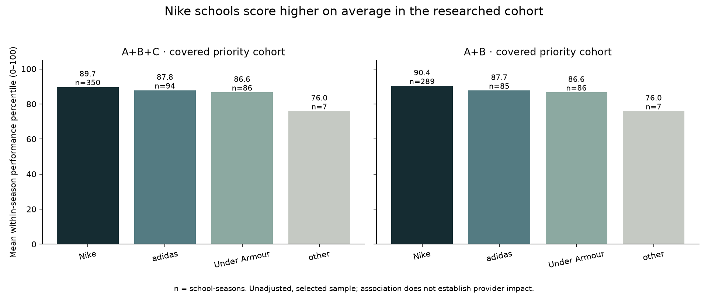
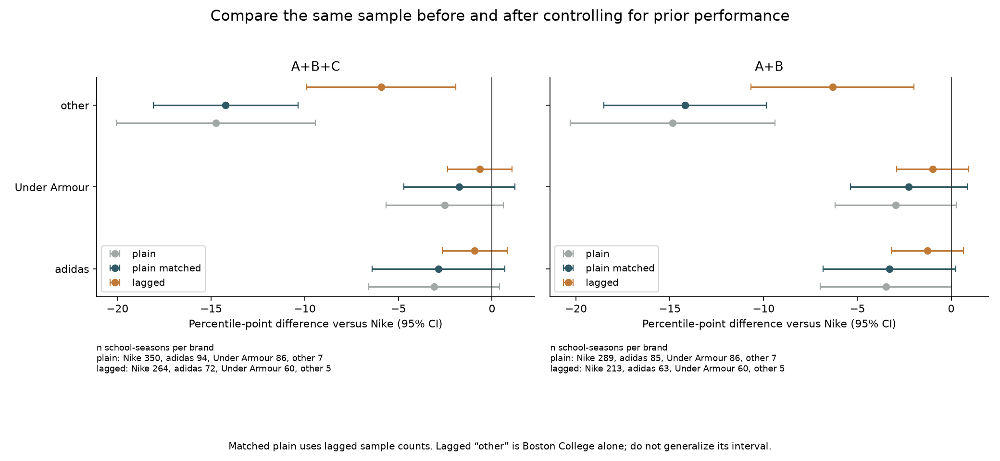

THE SWOOSH EFFECT · PHASE 3 · 30 SEPTEMBER 2026
Winning persists.
The brand gap shrinks.
Nike schools have the highest average performance in the covered research cohort. Once prior-season performance is included, their adjusted advantage over adidas and Under Armour becomes smaller under both evidence standards. These associations are consistent with persistent strength and selection into sponsorship; they do not establish who caused that strength.
Primary: A+B+C, 537 school-seasons / 73 schools. Sensitivity: A+B, 467 / 73. Lagged models use 401 and 341 school-seasons, respectively, across 72 schools. All schools with usable provider evidence are included, not only switchers. Unknown-brand rows are not guessed into a brand group. The broader performance panel contains 358 institutions, but sponsorship coverage remains focused on 74.
Brand comparison

Each row is an athletic-department season. Percentile is 100 × average ascending rank of total points / eligible programs in that season’s observed-ever universe, including 438 reviewed zeros and excluding 31 invalid zeros. It is not an all-D1 census. The mean raw points are supplementary; percentiles are used for comparisons across seasons. Nike includes Jordan; “other” groups known smaller providers and is not a missing-value category.
Plain and lagged models, side by side
Coefficients below are percentile-point differences relative to Nike; negative means a lower predicted percentile than Nike, conditional on the included controls. Brackets show 95% confidence intervals. Standard errors cluster by school, with a small-sample covariance correction and t inference using school clusters minus one degrees of freedom.

percentile(t) ~ brand + conference(t) + season
percentile(t) ~ brand + percentile(t−1) + conference(t) + season
The lag is the previous calendar season. There is no 2016–17 input, and cancelled 2019–20 is excluded; therefore 2017–18 and 2020–21 cannot enter the lagged model. A prior outcome may be used even when that prior season’s provider is unknown. Source conferences are season-specific; Pac 12/Pac-12 spelling is normalized. Yale’s 2020–21 zero uses the Ivy League classification supported on both sides; its source conference stays blank and the modeling assumption is labeled.
“Other” is a sparse group: seven seasons from three schools in the plain model, and five seasons from Boston College alone in the lagged model. Its mechanically computed interval is not reliable evidence about a general category of smaller brands. Repeated observations do not create independent schools.
The pick-versus-make check
The fair shrinkage comparison holds the rows constant. The additional plain_matched fit uses exactly the lagged model’s sample, without the lag predictor.
On matched rows, the Nike-relative adidas and Under Armour coefficient magnitudes shrink by about 62–68% with A+B+C and 56–62% with A+B. Both brands’ lagged-model intervals include zero in both versions. Prior-performance coefficients are 0.59 [0.35, 0.83] and 0.56 [0.30, 0.81], respectively. The continuity inference changes estimates modestly without changing this conclusion.
This supports a cautious “pick / persistence” interpretation, rather than evidence that a provider makes departments improve. It is not proof of Nike’s selection strategy. Athletic budgets, sport offerings, coaching, recruitment and institutional advantages remain omitted; prior performance may itself reflect earlier sponsor exposure. A nonzero coefficient would still be an association, and an interval containing zero does not prove no effect. These models have conference and season effects, not school fixed effects, and are not validated forecasting models.
Provider shares and top finishes
Denominators include all rows in the stated universe, including unassigned providers. “Ranked D1” means published final-standings rows, not the full D1 membership. “Current Power 4 cohort” follows the same 68 schools identified in 2025–26 back through the window; it is not a claim those schools were always in those conferences. Top-10 and top-25 shares use all official finishes at those ranks, including unassigned brands. n is school-seasons or finishes.
Expand brand shares, sample sizes and denominators
Switches are supporting case studies
Use up to two calendar seasons before and two after each first new-provider season; t=0 is the first post-switch season. Require at least one covered pre and one covered post observation for a before/after description. No outcome is manufactured for 2019–20, and no switch date is moved to hide a missing year. These are descriptive histories, with no causal claims or difference-in-differences estimates.
Open all ten school charts, eligibility decisions, sample counts and confounders
Women’s rowing: a limited supporting cut
Only positive published NCAA rowing scores enter this table. It compares scoring school-seasons, not all rowing programs or a team’s probability of qualifying. The provider is the department’s primary brand; individual team exceptions are not modeled. Unassigned rows remain visible, and are not included in the brand coefficients above.
Unverified or assumed
- 55 priority school-seasons remain unknown; sponsorship outside the 74-school research scope was not completed. The cohort is selective, and “all covered schools” is not all D1.
- 70 Tier C seasons are continuity inferences. Tier A retains labeled secondary contract reporting; Tier B uses dated official use. Neither establishes all amendments or actual payment amounts.
- Team exceptions and provider-payment disputes are documented but are not separate exposure variables. Continued use is not continuing payment.
- The 438 zeros use reviewed D1 program intervals. Some reflect COVID cancellations or postseason restrictions. Institutions never appearing in any input final standings are outside the panel.
- Switch coaching flags are a limited screen, not an audit of every sport or staff change. Realignment and COVID affect interpretation.
- Revenue and other department resources are not controlled. Private-school revenue gaps remain; the optional Knight–Newhouse robustness check was not run.
- Earlier per-sport reconciliation limitations remain; all-sports analysis uses official annual totals, not a reconstruction from incomplete sport contributions.
Unknown priority seasons by school
Reproduce and inspect
Run python -m src.analyze after building the database. The notebook notebooks/analysis.ipynb runs the same analysis and displays its tables. Every result CSV carries evidence tiers and sample counts. Source lineage lives in the research audit.
All coefficients and intervals · Per-brand sample sizes and tiers · Model specifications · Brand summaries · Shares by season · Rowing source rows
Method reference: statsmodels clustered covariance documentation. Installed version and numeric-library versions are recorded in analysis_validation.json.